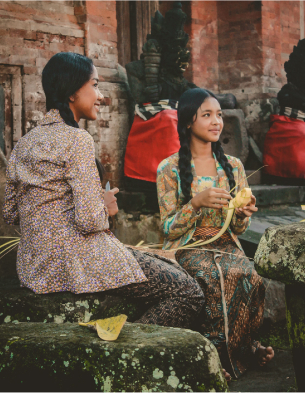

You will be amazed if you take part in this sailing Komodo island tour package. So it is also mandatory for you, besides enjoying Komodo tourism on Komodo Island, you also have to taste the marine tourism. The beautiful waters of Komodo will make you meet many travelers from other countries.
Read moreEnjoying the vast expanse of the sea of sand, witnessing the splendor of Mount Semeru that soars into the sky, and gazing at the beauty of the sun moving out of its bed or otherwise enjoying the dim twilight from the Bromo ridge is an unforgettable experience when visiting Bromo.
read moreknown for his politeness, manners and gentleness. This becomes a characteristic when they mingle with other tribes and become basic traits that are passed down by their ancestors.
Read more